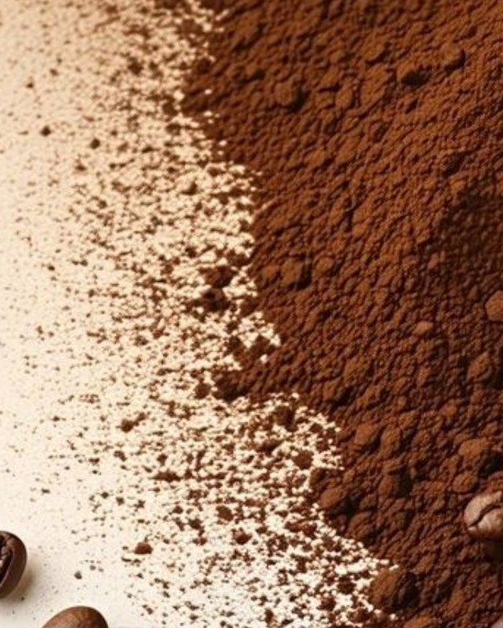
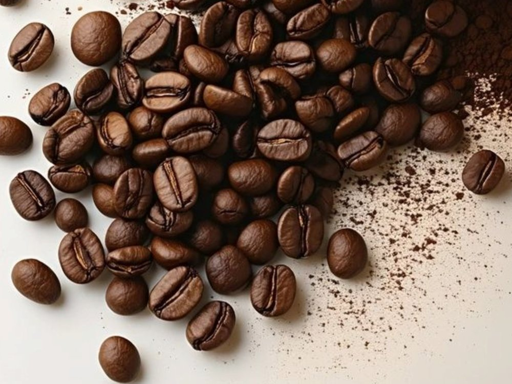
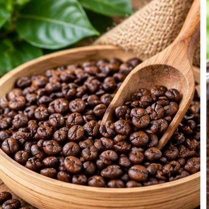

ARABIKA
Memiliki aroma kompleks, rasa lebih beragam, dan tingkat keasaman yang umumnya lebih terasa.
01 — AROMATIK
Mengenal karakter, aroma, dan cerita di balik setiap cangkir kopi.
Jelajahi jenis kopi
Memiliki aroma kompleks, rasa lebih beragam, dan tingkat keasaman yang umumnya lebih terasa.
01 — AROMATIK
Dikenal dengan karakter rasa lebih kuat, cenderung pahit, dan body yang lebih tebal.
02 — INTENS
Memiliki karakter aroma yang khas dan unik, dengan cita rasa yang berbeda dari jenis kopi populer lainnya.
03 — UNIK
Biji yang sama bisa terasa lebih bersih di V60 dan lebih pekat di espresso. Berikut tiga cara yang paling sering dipakai.
Air panas ditekan melewati bubuk kopi halus dengan tekanan tinggi. Hasilnya sedikit tetapi pekat, biasanya dengan lapisan crema di atasnya.
Seduh tuang manual dengan dripper berbentuk kerucut dan kertas filter. Rasanya cenderung bersih, jadi karakter asam dan aroma kopi lebih mudah dikenali.
Cara tradisional: bubuk kopi diseduh langsung di gelas tanpa filter. Ampasnya mengendap di dasar, sehingga rasanya pekat dan bodynya tebal.
Pilih metode, geser jumlah kopi, dan takaran dihitung otomatis.
225 g
air untuk diseduh
Indonesia punya banyak daerah penghasil kopi. Tiga yang paling sering disebut ada di sini.

Aceh Tengah dan Bener Meriah, Aceh
Kopi arabika dari dataran tinggi Aceh. Umumnya bertubuh tebal dengan keasaman rendah sampai sedang, dengan rasa cokelat dan sedikit rempah.
Tana Toraja dan Toraja Utara, Sulawesi Selatan
Arabika dari pegunungan Sulawesi Selatan. Biasanya terasa lembut dan earthy, dengan sentuhan rempah dan keasaman yang rendah.
Kintamani, Bangli, Bali
Arabika dari sekitar Gunung Batur. Keasamannya cerah seperti buah jeruk dengan rasa manis yang bersih. Kebunnya sering ditanami berdampingan dengan pohon jeruk.
Karakter rasa bisa berbeda tergantung panen, pengolahan, dan cara seduh.
Kopi adalah biji dari buah pohon kopi (genus Coffea). Buahnya sering disebut cherry karena berwarna merah saat matang. Biji di dalamnya disangrai, digiling, lalu diseduh menjadi minuman yang kita kenal.
Pohon kopi diyakini berasal dari dataran tinggi Ethiopia. Dari sana kopi menyebar ke Yaman dan berkembang sebagai minuman lewat jalur perdagangan di Timur Tengah. Kisah penggembala bernama Kaldi yang melihat kambingnya bersemangat setelah memakan buah kopi memang terkenal, tetapi lebih tepat dianggap legenda.
Belanda membawa bibit kopi ke Jawa pada akhir abad ke-17. Sejak itu kopi menjadi bagian dari pertanian Indonesia, dan sekarang ditanam di banyak dataran tinggi dari Aceh sampai Papua.

Isi data singkat di samping untuk membuat kartu penikmat kopimu sendiri.
Data tersimpan
Pilih rasa yang paling kamu suka, lalu lihat jenis kopi yang cocok dicoba lebih dulu.
Pilih salah satu di atas.